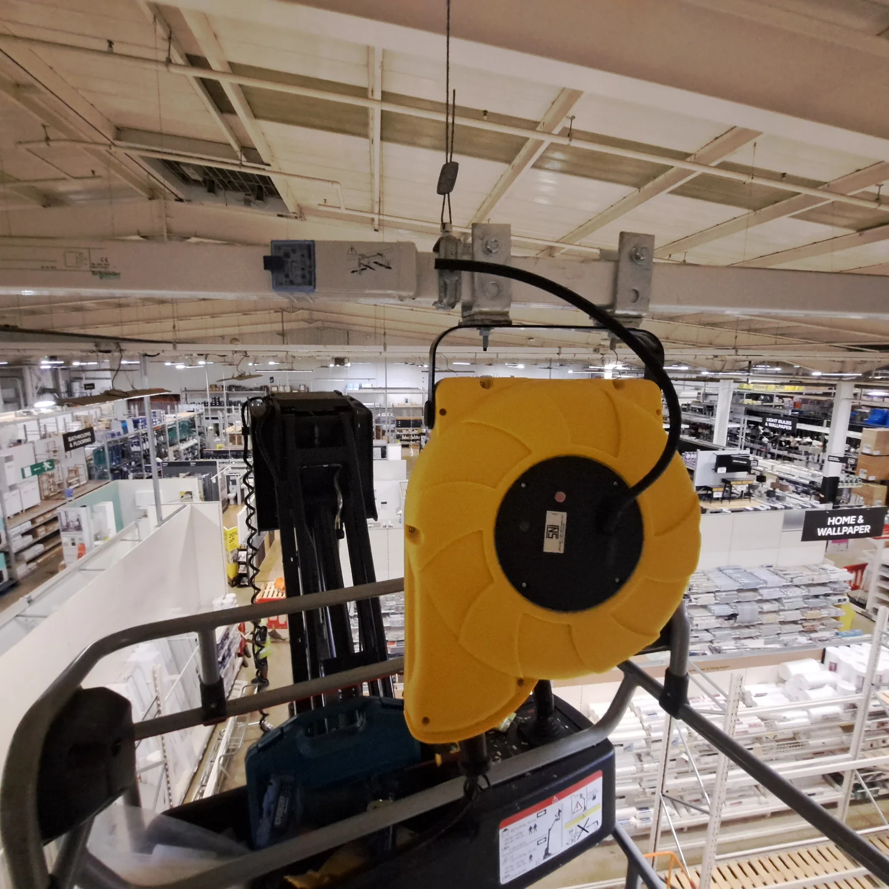
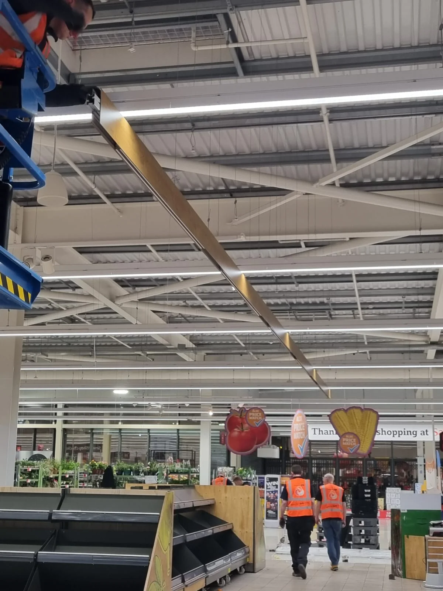
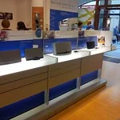
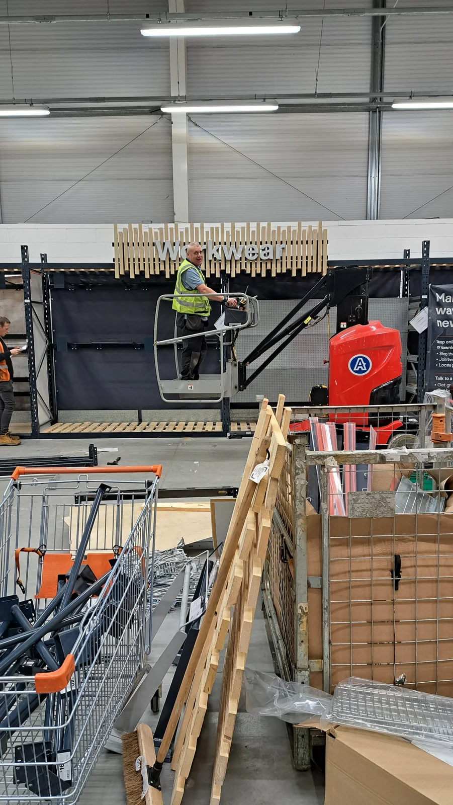
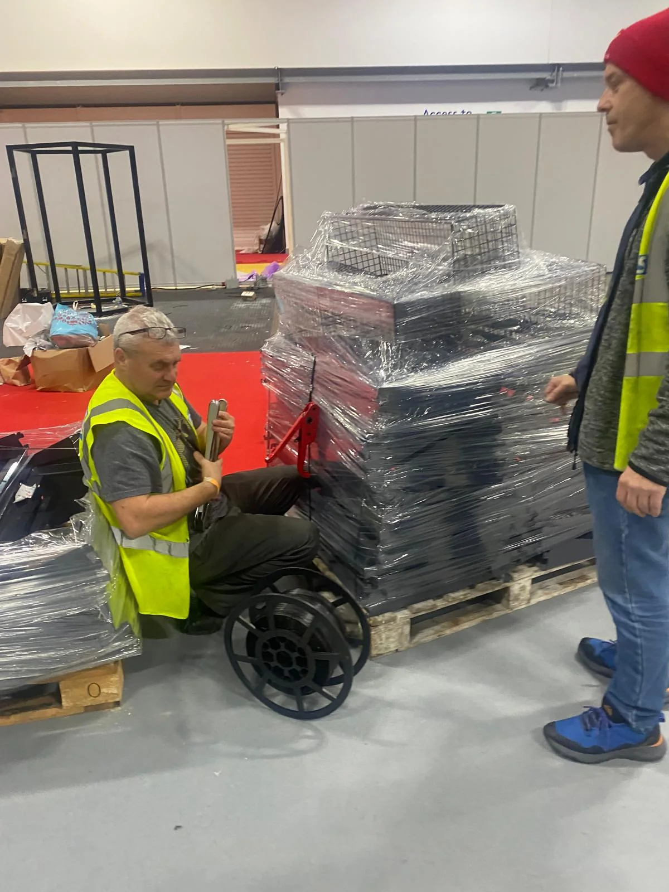
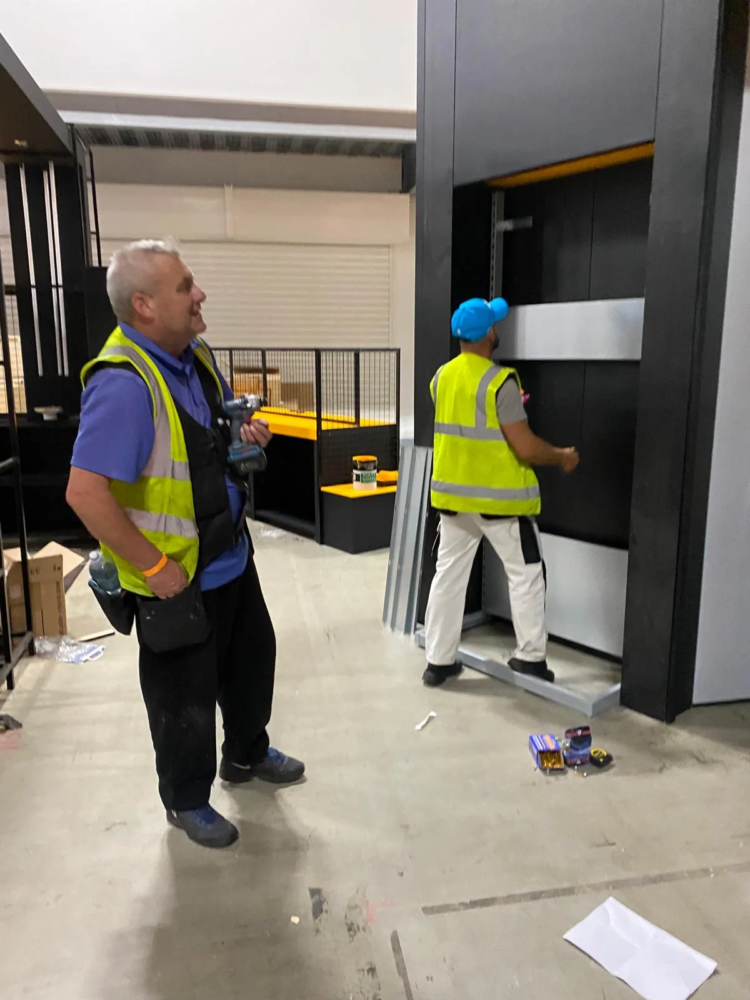
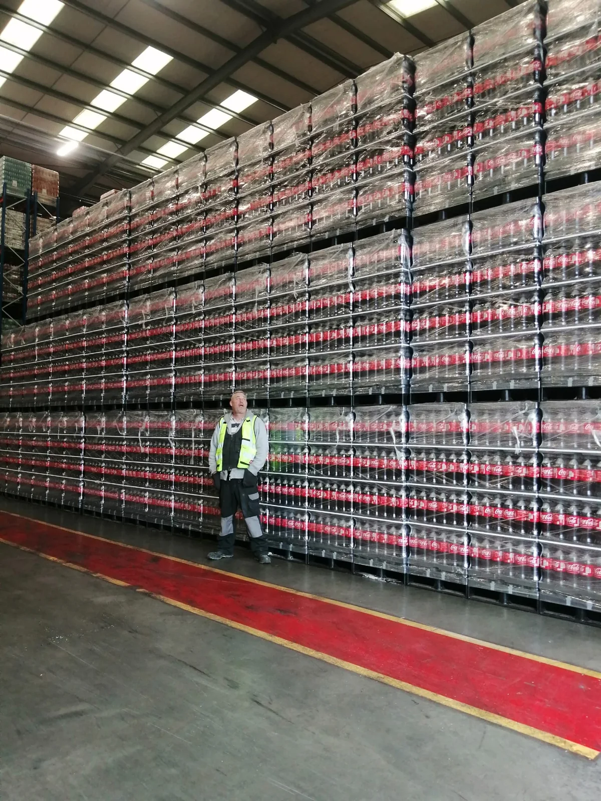

JusWrk project archive
Work in progress.
Proof on show.
Genuine project photography showing the scale, environments and practical delivery behind the profiles in M-Hub.
Electrical & systems
Power, lighting and commissioning.






Retail & shopfitting
From staged components to finished bays.





